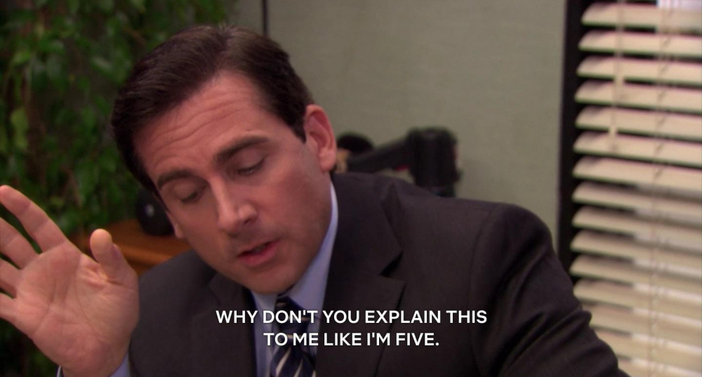
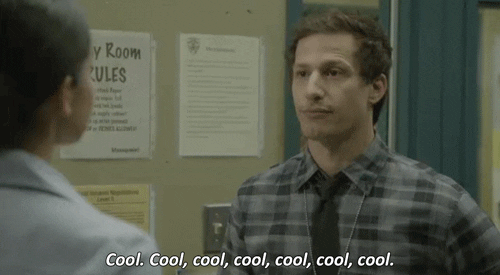

Questa è una prova di paragrafo; si deve utilizzare questa sintassi per scrivere un paragrafo anziché usare gli heading
Paragrafo di colore giallo, grazie alla classe e al CSS

Link a una SERIE BELLA.
Vediamo come creare un'ancora che riporta all'inizio della pagina
Questo qui è un paragrafo; grazie alla classe e al file CSS gli ho assegnato il colore blu
Questo qui invece è un paragrafo verde colorato nello stesso modo di quello di prima